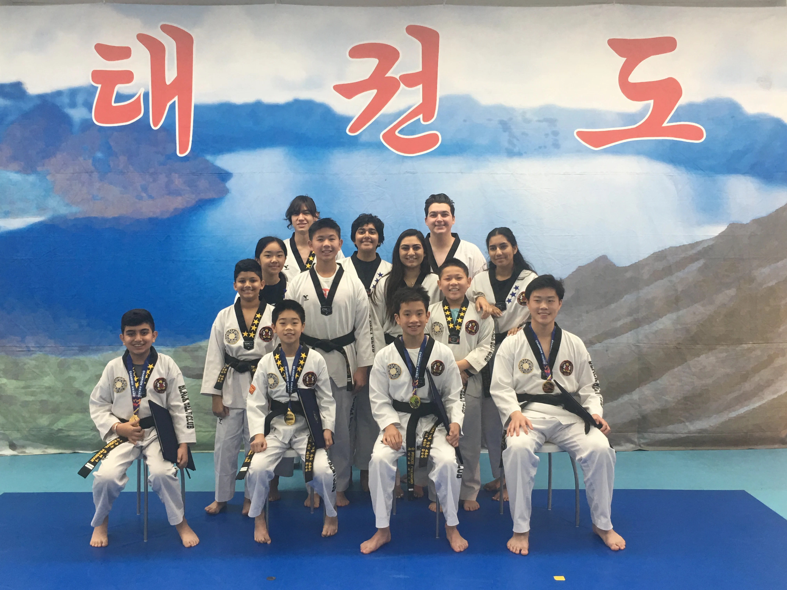
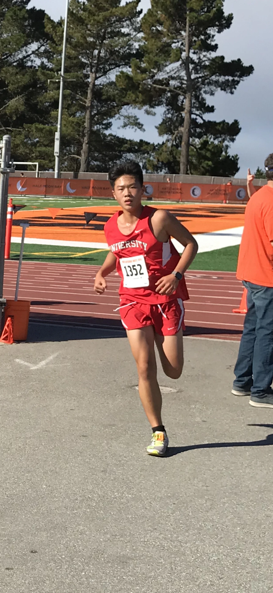

-
I have a labrador retriever named Momo. He has his own
website.
- I keep track of my climbing training plan in this document. I occasionally upload climbing videos to my YouTube channel. I've also found this article to be useful in determining the right shoe size for me.
-
Books I'm currently reading:
- AI Systems Performance Engineering: Optimizing Model Training and Inference Workloads with GPUs, CUDA, and PyTorch by Chris Fregly
-
Some of the books I'm planning to read:
- Computer Architecture: A Quantitative Approach, 7th Edition by John L. Hennessy, David A. Patterson, and Christos Kozyrakis
- The C Programming Language, 2nd Edition by Brian W. Kernighan and Dennis M. Ritchie
- Hacker's Delight by Henry S. Warren, Jr.
-
Some of the books I've read:
- Designing Data-Intensive Applications, 2nd Edition by Martin Kleppmann
- High Performance Browser Networking by Ilya Grigorik
- Operating Systems: Three Easy Pieces by Remzi H. Arpaci-Dusseau and Andrea C. Arpaci-Dusseau
- Advanced Programming in the UNIX Environment by W. Richard Stevens and Stephen A. Rago
- Moving the Needle: How An Average Climber Can Do The Hardest Route In The World by Dave Macleod
- 9 out of 10 Climbers Make the Same Mistakes by Dave Macleod
- Why Diets Make Us Fat by Sandra Aamodt
- The Future of Nutrition by T. Colin Campbell
- Four Thousand Weeks by Oliver Burkeman
- Programming Massively Parallel Processors by Wen-mei W. Hwu, David B. Kirk, and Izzat El Hajj
- Hypermedia Systems by Carson Gross, Adam Stepinski, and Deniz Akşimşek
- 1984 by George Orwell
- White Holes by Carlo Rovelli
- Love and Math by Edward Frenkel
- Animal Farm by George Orwell
- How To by Randall Munroe
- What If? 2 by Randall Munroe
- Framers by Kenneth Cukier, Viktor Mayer-Schönberger, and Francis de Véricourt
- Quantum Computing for Everyone by Chris Bernhardt
- The War of Art by Steven Pressfield
- There Are Places in the World Where Rules Are Less Important Than Kindness by Carlo Rovelli
- What If? by Randall Munroe
- Business Adventures by John Brooks
- Zero to One by Blake Masters and Peter Thiel
- Enlightenment Now by Steven Pinker
- Taxi from Another Planet by Charles S. Cockell
- Lying by Sam Harris
- Superintelligence by Nick Bostrom
- Living in Data by Jer Thorp
- Life 3.0 by Max Tegmark
-
Some desserts I've made:
- Japanese Cheesecake (my mom's favorite!)
- NY Cheesecake
- Baklava (my favorite!)
- Cookies
- Cinnamon Rolls
- Monkey Bread
- French Toast with a separate video for measurements
- Pancakes and a sheet-pan version
- Ube Roll
- Brownies
- Tiramisu (my brother's favorite!)
- The Evil Genius Cake
-
I'm a black belt in Taekwondo, certified by World Taekwondo.

-
I'm a Music Teachers National Association (MTNA) level 10 pianist.
Some songs I've played:
- Scherzo, Op. 31, No. 2 by Chopin
- Ballade pour Adeline by Clayderman
- Prelude No. 1 by Gershwin
- Nocturne, Op. 9, No. 2 by Chopin
- Piano Sonata, Op. 27, No.2 by Beethoven
- Piano Sonata, Op. 13, No.8 by Beethoven
- Gymnopedie, No. 1 by Satie
- Odeon by Nazareth
- Praeludium und Fuge B - Dur, BWV 866 by Bach
- Paganini Etude No. 5 by Liszt
- Tarantella by Pieczonka
- Prelude in E Minor, Op. 28, No. 4 by Chopin
- Prelude, BWV 935 by Bach
- In the Forest, Op. 51, No. 4 by Rebikov
- The Storm, Op. 109, No. 13 by Burgmuller
- Waltz, Op. Post. by Chopin
- Valse Dramatico by Bober
- Fur Elise by Beethoven
- Sleeting by Heller
-
I've run up to seven miles in one run, and (on a separate occasion)
I've run a six minute mile.
